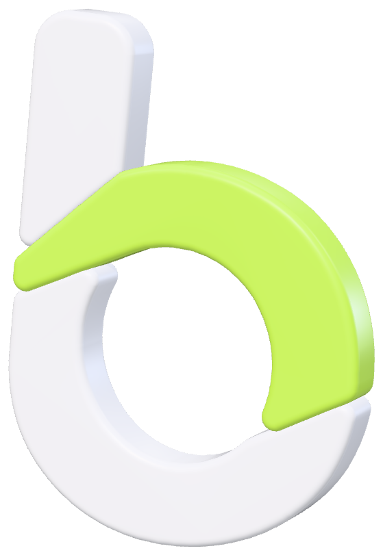

Tontine
Les tours s'enchaînent et la collecte est versée automatiquement à la bénéficiaire. Besoin d'avancer ton tour ? Propose un échange, le groupe vote.
Tirage ou ordre d'arrivéePlusieurs noms par personneÉchange de tours voté
Bokk tient les comptes de ton groupe : qui a cotisé, combien vous avez réuni, à qui revient le tour. Tes tontines, cagnottes et coffres, depuis ton téléphone.
Une tontine entre cousines, la caisse d'une association, une cagnotte pour un mariage ou un coffre pour la Tabaski : chaque activité a ses règles, et chaque membre voit où en est l'argent.
Les tours s'enchaînent et la collecte est versée automatiquement à la bénéficiaire. Besoin d'avancer ton tour ? Propose un échange, le groupe vote.
Association, collègues, famille : une caisse commune, des cotisations régulières, et des retraits approuvés par les membres.
Un mariage, un baptême, un coup dur : chacun participe, puis l'organisateur remet la somme. Montant libre ou fixe, participations anonymes si vous le voulez.
Financer ensemble un projet commun, ou épargner chacun sa part vers un même objectif, avec une date.
Ton épargne personnelle : libre, ou verrouillée jusqu'à une date ou un objectif. Pour ne pas toucher à l'argent de la Tabaski.
Bokk remplace le cahier, les captures d'écran et les relances dans le groupe WhatsApp.
Crée ta tontine en quelques écrans, puis partage son code. Tes proches la rejoignent avec le lien, et tu acceptes chaque demande.
BK-COUSINESPaie depuis ton compte Bokk ou avec ton mobile money. Les frais s'affichent avant de valider, ton code secret confirme.
Qui a cotisé, combien est réuni, à qui revient le tour : tous les membres voient la même chose, au même moment. Et Bokk relance à ta place.
Créer un compte est gratuit. Tu vois toujours le total avant de payer, et rien n'est retenu sur la collecte.
Grille de la phase de test, susceptible d'évoluer. Elle est toujours rappelée dans l'appli avant de payer.
Chaque paiement demande ton code secret, chaque sortie d'argent passe par le groupe, et chaque écriture reste visible.
Redemandé pour chaque paiement. L'appli se verrouille quand tu la quittes plus de deux minutes.
L'argent d'une caisse ne sort qu'avec l'accord des membres, selon les règles du groupe.
Chaque cotisation, versement ou retrait est écrit et visible par les membres. Rien ne s'efface.
Tout ce qui circule entre ton téléphone et Bokk est chiffré.
Aucun montant n'apparaît sur l'écran verrouillé de ton téléphone.
Bokk est en test avec ses premiers groupes. Voici ce qui marche déjà, et ce qui arrive.
Tours, calendrier, tirage au sort, échange de tours voté par tout le groupe.
Cotisations régulières, retraits et prêts approuvés par les membres.
Participations libres ou fixes, épargne libre ou verrouillée.
Une page bokkapp.com pour partager ta cagnotte au-delà du groupe.
Une appli pour tout ce qu'un groupe fait ensemble avec l'argent : tontines, caisses d'associations, cagnottes et épargne. Bokk tient les comptes, et chaque membre voit la même chose. « Bokk » veut dire « partager » en wolof.
Créer un compte est gratuit. Payer depuis ton compte Bokk ne coûte rien. Seuls les paiements par Wave, Orange Money ou Free Money ont des frais, affichés avant que tu valides.
Depuis ton compte Bokk, ou avec Wave, Orange Money ou Free Money. Tu peux aussi cotiser pour quelqu'un d'autre : c'est son échéance qui est réglée, et le reçu garde ton nom.
Oui : chacun rejoint la tontine avec son code ou son lien, puis l'organisateur accepte la demande. C'est ce qui permet à tout le monde de suivre les comptes et de voter.
Le groupe, selon ses règles : tous les membres, une partie d'entre eux, ou les personnes habilitées. Sans assez d'accords, l'argent ne sort pas.
Bokk est en test avec ses premiers groupes. Elle arrive bientôt sur l'App Store et sur Google Play.
Bokk arrive bientôt sur iPhone et sur Android.
